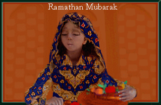
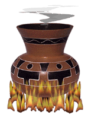
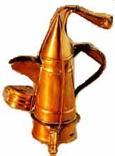

Swahilis who live a long the Kenyan Coast. Prepare an incredible variety of of meals using fish, tropical fruits,coconut milk and exotic spices,many which reflect the influences of travellers who have touched their shores. Further north in Lamu,Visitors always Remember the tiny cups of coffee and delicate sweet meat (Haluwa) clear indication of the Arab influence on that Island.

At any fish market in the coastal city of Mombasa, a multitude of brightly coloured fish are laid out on a wet slabs to be poked and prodded by the fussy cooks who come to buy for the neaxt meal.for genererations, the coastal people have been using fish as an impotant part of their diet,Often preparing using a combination of ingredients and techniques from the foreign traders and explorers who visited their shores.

Visitors to Kenya will never forget the lavish buffets prepared in the beach hotels, each of which tries to outdo others in displays of marinated fish,Samaki curries and lavish shellfish arrangements. Most of the recipes used by the chefs in these grand hotels can be easily adapted to fish found in other parts of the world. The sun baked feeling of a coastal meal can be re created anywhere by covering the tables with pattened Leso(khanga)material of the kenyan striped Kikois.Serve the food in hand carved wooden bowls.